分布式系统核心理论
概念
分布式系统是指分散在多个物理机/虚拟机节点的资源，节点在网络中相互通信，并对外暴露统一服务的系统。
注意:外部访问节点A的接口时，内部路由到对应的节点服务。核心是搞一个哈希表，方便做路由转发。
其他概念
- 分布式容错，是指在分布式环境下，能够容忍一部分节点宕机，还能向外提供稳定的服务。
- 分布式共识算法，是指在分布式环境下，各个节点能就某个值达成共识，即所有节点都认同某个值。
设计目标
- 为什么要设计分布式系统？
设计分布式系统的目标是解决单节点资源限制问题。在业务量增长速度比较快的场景下，单节点的资源难适应（计算资源和存储资源需要不断扩）。
- 分布式系统如何解决单节点的资源限制问题？
关键词：多节点、节点通信、服务分散、容易拓展、高容错。通过将系统的服务分散到多个节点，有效提高了单节点的资源利用率，并且后续的拓展容易，只需要增加节点即可。
- 引入分布式设计带来什么问题？
- 节点与节点之间的关联数据容易出现不一致的情况。
- 网络通信情况对系统性能存在比较大的影响。比如延迟。
系统结构
分布式系统的结构式由节点组成的一个P2P网络。
P2P网络
点对点技术，本质上也是基于C/S模式，简单来说每个网络节点既是客户端也是服务端，不存在中心的服务器。
内网穿透技术
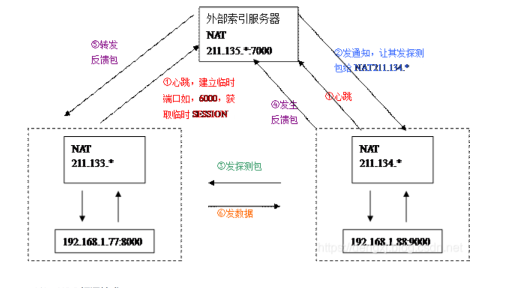
（1） UDP打洞技术
最为常见的实现P2P的方式是采用UDP打洞技术，UDP打洞技术是通过中间服务器的协助在各自的NAT网关上建立相关的表项，使P2P连接的双方发送的报文能够直接穿透对方的NAT网关，从而实现P2P客户端互连。如果两台位于NAT设备后面的P2P客户端希望在自己的NAT网关上打个洞，那么他们需要一个协助者——集中服务器，并且还需要一种用于打洞的Session建立机制。
Session建立机制：
假定客户端A要发起对客户端B的直接连接，具体的“打洞”过程如下：
（1）A最初不知道如何向客户端B发起连接，于是A向集中服务器（本质上是一台被设置在公网上的服务器，建立P2P的双方都可以直接访问到这台服务器。位于NAT网关后面的客户端A和B都可以与一台已知的集中服务器建立连接，并通过这台集中服务器了解对方的信息并中转各自的信息）发送消息，请求集中服务器帮助建立与客户端B的UDP连接。
（2）集中服务器将含有B的外网和内网的地址二元组发给A，同时，集中服务器将包含有A的外网和内网的地址二元组信息的消息也发给B。这样一来， A与B就都知道对方外网和内网的地址二元组信息了。
（3）当A收到由集中服务器发来的包含B的外网和内网的地址二元组信息后， A开始向B的地址二元组发送UDP数据包，并且A会自动锁定第一个给出响应的B的地址二元组。同理，当B收到由集中服务器发来的A的外网和内网地址二元组信息后，也会开始向A的外网和内网的地址二元组发送UDP数据包，并且自动锁定第一个得到A回应的地址二元组。一旦A与B都向对方的NAT设备在外网上的地址二元组发送了数据包，就打开了A与B之间的“洞”，A与B向对方的外网地址发送数据，等效为向对方的客户端直接发送UDP数据包了。一旦应用程序确认已经可以通过往对方的外网地址发送数据包的方式让数据包到达NAT后面的目的应用程序，程序会自动停止继续发送用于“打洞”的数据包，转而开始真正的P2P数据传输。
当然，UDP转换协议提供的“洞”不是绝对可靠的，多数NAT设备内部都有一个UDP转换的空闲状态计时器，如果在一段时间内没有UDP数据通信，NAT设备会关掉由“打洞”过程打出来的“洞”。如果P2P应用程序希望“洞”的存活时间不受NAT网关的限制，就最好在穿越NAT以后设定一个穿越的有效期。
（2） TCP打洞技术
从现在的主流应用的角度上来看，基于TCP的P2P应用显然不如基于UDP的应用那么广泛，但是也存在打洞的需求。
TCP相对于UDP而言要复杂的多，TCP连接的建立要依赖于三次握手的交互，所以NAT网关在处理TCP连接的时候，需要更多的开销。但是，由于TCP协议完备的状态机机制，TCP反而比UDP更能精确的获取某个Session的生命期。
一种新的代理类型 XTCP 能解决这个问题，实现方式可以是采用搭建FRP服务器的方式，在传输数据的两端都部署上 FRP 客户端上用于建立直接的连接。实现方法点击此处
Gossip协议
Gossip协议是一种在分布式系统中用于节点间通信和数据同步的算法。这种协议通过“流言”（Gossip）方式传播信息，类似于人们通过口耳相传的方式传播小道消息。Gossip协议特别适用于大规模、无中心的网络环境，因为它不依赖于单一的通信路径或节点。
Gossip协议的工作原理大致如下：
- 随机性：每个节点定期与其他节点（通常是随机选择的）交换信息。这种随机选择的机制使得信息能够在网络中迅速扩散。
- 信息交换：当两个节点交互时，它们会交换彼此还没有的信息，或者更新对方的过时信息。这个过程可以比作两个人互相交换彼此还没有听说过的最新八卦。
- 冗余传播：由于每个节点都与多个其他节点交换信息，相同的信息会在网络中多次传播。这种冗余确保了信息即使在网络中存在故障的情况下也能可靠地传播。
- 收敛性：随着时间的推移，所有节点最终会获取到网络中的全部信息，达到一致的状态（收敛）。这个过程的速度取决于节点交换信息的频率和网络的结构。
Gossip协议有几个显著的优点：
- 可扩展性：它能够很好地扩展到大规模网络，因为每个节点只需要与少数几个其他节点通信。
- 容错性：由于信息通过多条路径传播，即使一些节点或连接失败，信息也可以通过其他路径传播。
- 去中心化：它不依赖于任何中心节点或结构，增强了网络的鲁棒性。
Gossip协议在多种场景中有应用，包括但不限于分布式数据库的数据同步、P2P网络、容错系统和一些基于微服务的架构中的服务发现机制。
Gossip协议类型
传播协议/谣言协议（Dissemination Protocols / Rumor-Mongering Protocols）： 通过网络中的泛洪代理来工作，节点收到广播的数据后直接转发给所有的邻居节点；此方式可以提高网络的健壮性，但是容易造成广播风暴。
反熵协议（Anti-Entropy Protocols）：用于修复复制数据，通过比较复制和协调差异进行操作；Hyperledger Fabric中的数据同步就是使用此方式实现。 计算聚合的协议（Protocols that Compute Aggregates）：通过对网络中节点的信息进行采样，并将这些值组合起来得到系统范围内的值，从而计算出网络范围内的集合 ；之后将建立一种全面的信息流模式。
Gossip数据传输
Gossip 协议最终的目的是将数据分发到网络中的每一个节点，那么在不同的具体应用场景中如何保证网络中的每一个节点都能够接收到对应的数据且在不稳定的网络环境中保持数据的实时同步。
Gossip数据分发协议实现了两种数据传输方式：
-
推送方式（Push-based）：
- 网络中的某个节点随机选择N个节点作为数据接收对象
- 该节点向其选中的N个节点传输相应的信息
- 接收到信息的节点处理它接收到的数据
- 接收到数据的节点再从第一步开始重复执行
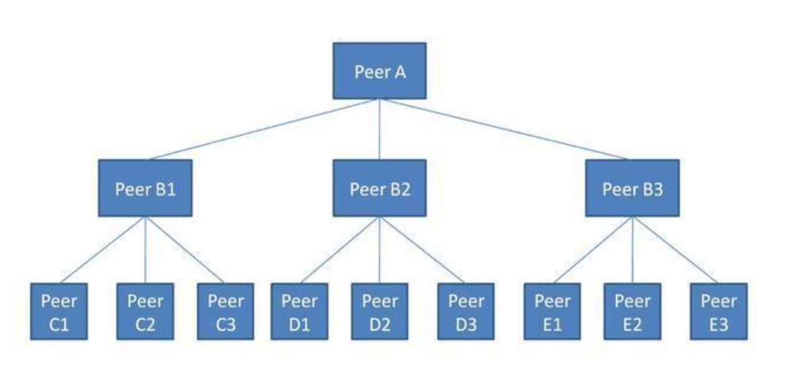
-
拉取方式
- 某个节点周期性地选择随机N个节点询问有没有最新的信息
- 收到请求的节点回复请求节点其最近未收到的信息
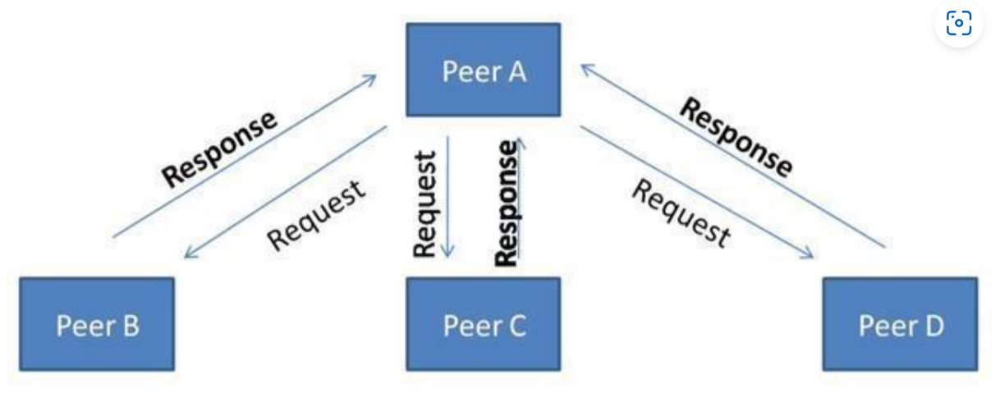
CAP设计原则
一致性Consistency
所有节点在同一时间看到相同的数据。这意味着一旦数据更新，所有的读取操作都应该返回最新的值。
可用性Availability
每个请求都能得到响应，无论响应成功或失败。系统应该保证每个请求不会因为系统故障而失败。（即时响应性）
分区容错性Partition tolerance
系统应该能够在网络分区（即某些节点之间的通信断裂）的情况下继续运行。
三性权衡
CAP定理指出，在任何分布式系统中，最多只能同时满足上述三个特性中的两个。具体来说：
- 如果系统优先保证一致性和可用性（C和A），那么它可能无法处理网络分区。
简单理解，前提条件就是节点数据保持实时一致，节点面对请求始终有响应。如果出现节点通信不可靠时，节点实时响应请求，除非节点在同一个分区，否则数据就无法保持一致，故保证C、A无法处理网络分区。
- 如果系统优先保证一致性和分区容错性（C和P），那么在网络分区发生时，可能无法保持高可用性。
简单理解，网络分区发生时，如果要保证数据一致且系统正常运行,相关的服务就需要停止，等待恢复节点通信，直到数据达到一致才可对外提供服务。此时可用性就无法保证了。
- 如果系统优先保证可用性和分区容错性（A和P），那么在网络分区发生时，可能无法保持强一致性。
简单理解，网络分区时时，服务需要及时响应，若此时不同分区的节点之间仍未恢复通信，则数据无法保持一致。
Base设计理论
核心思想：牺牲强一致性来获取高可用性，只强调最终的结果一致性。即区块链的共识机制。
其实就是采用弱一致性模型来设计分布式系统。
一致性问题
分布式系统的一致性问题主要强调数据的一致性问题。
导致分布式系统数据不一致的原因
-
网络延迟： 导致节点数据同步出现延迟。
举个例子，
x值为1，客户端1要求节点A的更新x值为2，节点A需要同步给节点B，但由于延迟问题还没有完成同步，此时客户端2通过节点B读取x值得到的值仍为1，即当前情景下节点A、B数据不一致。 -
节点故障：某些节点可能因故障而未能接受或处理最新数据。
举个例子，节点B宕机，未处理到节点A的数据更新请求。
-
数据副本：在多个节点间维护数据副本时，同步更新可能导致不一致。
举个例子，多节点维护同一份账本，同步更新过程可能存在数据不一致的情况。主要考虑延迟、处理顺序、节点硬件配置、并发冲突等因素。
-
并发更新：多个节点同时对同一数据进行更新时可能导致冲突和不一致。
-
时钟偏差：分布式系统中的不同节点可能有时钟偏差，影响时间顺序的数据处理。
不同操作系统的中断逻辑可能不一样。
-
消息丢失或重复：网络问题可能导致数据包的丢失或重复发送。
重放攻击和丢包问题，存在一些简单的解决方式：时间戳和完整性验证(hash对比)，验证不同通知重新发送数据。
-
一致性策略：如使用最终一致性而非严格一致性策略，会有过程不一致的情况出现。
一致性模型类型
目标：解决分布式系统的数据一致性问题.，保证节点之间关联的数据逻辑上完整且正确。
- 强一致性模型，即严格一致性模型。
- 弱一致性模型，即非严格一致性模型。
简单来说，两者的区别是，是否能保证数据的过程一致性，能就是强一致性，不能就是弱一致性。但需要进一步理解的是，paxos的达到提案一致的过程存在数据不一致的情况，但paxos也归属强一致性模型，目前的理解可以为“提案提出——接受——一致”的过程中数据处于一种不可用的状态，所以不属于过程不一致。
注：过程一致性的“过程”主要是指数据外部可用的过程。
一致性协议
两段提交（强一致性模型）
核心思想：是在分布式事务中保证原子性。当一个事务跨多个节点时，要么所有节点上的参与进程都提交事务，要么都取消事务，强调事务一致性。
优点：
- 强一致性
- 简单易实现
- 场景广泛支持
- 故障恢复
- 适用于分布式系统
存在的问题：(也就是在节点数量较少、网络比较稳定的前提下，可以考虑使用两段提交)
- 性能开销大，需要等待所有节点表决完。
- 若存在网络故障，进入一种无限等待的情况，即锁定状态。
- 协调者节点崩坏，业务崩溃。
Quorum（弱一致性模型）
鸽巢原理：假设有m个苹果，需要全部分配给n个人，当m=n+1时，至少存在一个人拥有2个苹果。
Quorum的主要作用的削弱一致性，增加可用性。
场景推导：当前有N个节点，节点数据X需要保持一致。
现有节点提出更新数据X，已知了M个节点更新数据X，当前已经读取R个节点的数据X，当R+M>N时（即R+M>=N+1），R中至少存在一个数据X为最新提交的版本。
进一步推导，若希望读取M个节点的X时，M中至少存在一个数据X为最新提交的版本，可以得到大于半数的不等式推导：
$$
2M>=N+1
=> M >= N/2 + 1/2
=> M > N/2
$$
故至少要保证更新超过N/2个节点的数据X，可以保证读取最多不超过（N+1）/2个节点或者N/2个节点，可以获取到最新更新的数据X。
从宏观来看可以认为，超过N/2节点认定的操作，在分布式系统中该操作为有效操作，因为只要读取超过（N+1）/2个节点或者N/2个节点，总是能拿到一致的结果。
注意：此处只能确认存在性，需要确认最新提交的数据X，可以考虑数据X的增加版本号，每次更新时更新版本号值，通过版本号来确认最新提交的数据X。
Paxos协议（强一致模型）
目标：确保分布式系统中数据的强一致性。paxos强调值的一致性
注意：提案值一旦被接收，就算有新的节点提议被接收，其提议值也只能是之前最大编号对应的接收值。
协议流程描述
- 准备阶段
- 提议者发起提案n；
- 接收者收到提案请求后判断是否最大编号n(根据本地已接收的提案)，若是则通过“发起提案n”的申请，则接收者表示不再接受提案编号小于n的发起提案准备请求和发起提案接受请求，跳转至4，否则跳转至3
- 通知提议者放弃本次提案。
- 如果存在已经接收的提案，返回已通过的最大提案编码的提案内容，否则无返回或返回空值。
- 回复者超过半数时，准备进入发起提案接收请求阶段；否则废除提议等待重新发起。
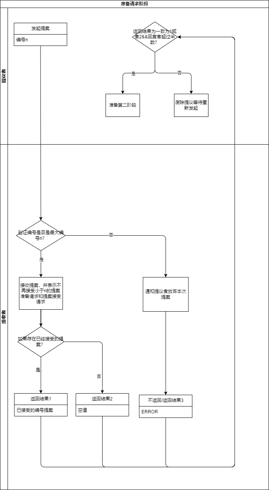
- 接收阶段和学习阶段。
- 提议者发起接收提案请求，包含提案编号n和对应的提案内容v。注意：若是在准备阶段中返回了已经接收的提案值，则接收请求的提案内容必须与该提案值保持一致，否则由提议者指定。
- 验证编号n是否是已通过提案的最大编号？是则更新编号到本地，否则不接收提案n
- 返回已经接收的最大的提案编号m
- 提议者判断m和自己当前的提案编号n是否相等，是该接收者已经通过提案，否则接收者没有通过提案。
- 通过提案的接收者数量为大多数时，认定提案通过，发起提案同步请求。
- 接收者开始通知学习者同步提案结果，待最后一个学习者同步结束后，进行一致性检查，结果一致结束，不一致则等待重新发起提案。
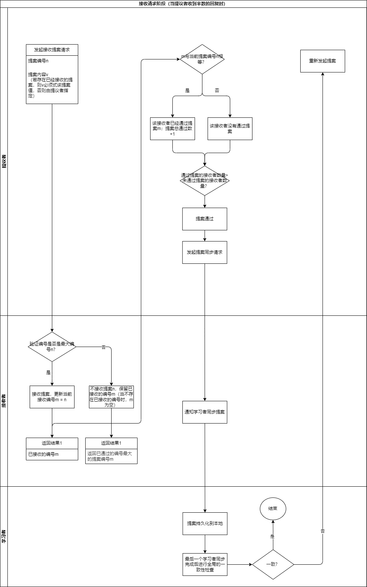
算法模拟
假设存在3节点的paxos集群，这里需要注意每一个节点可以同时扮演提议者和接收者。
**场景描述：**提议者A收到请求需要将X设置成3，提议者B收到请求将X设置成5，提议者A和B分别生成提案，其中A的编号为1，B的编号为2。
提案准备阶段：
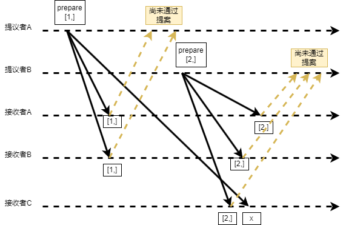
提案准备阶段流程描述：
-
提议者A和提议者B分别进入prepare阶段，将提案编号发给接收者。
-
接收者A和接收者B在收到提议者A的prepare请求后，由于没有通过过任何prepare请求，也没有批准过任何的accept请求。则给提议者A返回尚无提案。
-
接收者C由于先收到提议者B的prepare请求再收到提议者A的prepare请求，且接收者B的提案编号大于提议者A的提案编号，故不给提议者A返回。
-
接收者A和接收者B在收到提议者B的prepare请求后，由于之前收到提议者A的prepare请求，则比较各自的提案编号，由于提议者B的提案编号大于提议者A的提案编号，且没有通过提案的接收请求，故给提议者B返回尚无提案，并向提议B保证（针对于后续的prepare请求和accept请求）：
（1）承诺不再通过编号小于等于当前提案的prepare请求
（2）承诺不再通过编号小于当前提案的accept请求，也就是不再通过编号小于当前提案
（3）如果已经通过某一提案，则承诺在prepare请求的响应中返回已经通过的最大编号的提案内容。如果没有通过任何提案，则在prepare请求的响应中返回空值
-
至此提议者A获得了prepare响应，提议者B获得了三个prepare响应。均超过了半数，可以发起提案接收请求。
接收提案阶段
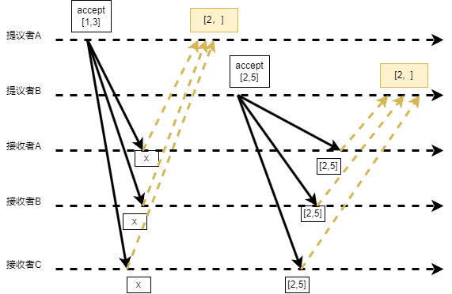
接收提案阶段描述
- 提议者A由于收到prepare响应中没有提案内容，则自行设置提案值[1,3]，并向各个接收者发起接收请求。
- 接收者A、B、C收到提议者A的请求后，由于在prepare阶段，他们都向B保证了以下内容：承诺不再通过编号小于提案2的accept请求，也就是不再通过编号小于当前提案；如果已经通过某一提案，则承诺在prepare请求的响应中返回已经通过的最大编号的提案内容。如果没有通过任何提案，则在prepare请求的响应中返回空值。故给提议者A的返回prepare阶段通过的最大的提案编号2。
- 提议者A收到2后，发现响应中的提案编号2比自己的提案编号1大，则认为accpet请求没有通过,提议者A需要重新回到prepare阶段进行协商。
- 提议者B由于收到的prepare响应中没有提案内容，则自行设置提案值[2,5]，并向各个接收者发起接收请求。
- 接收者A、B、C，在此期间没有通过任何的prepare请求也没有通过任何的accept请求，即同意批准该提案，返回2, 给proposerB。
- 提议者B收到accept响应后，比对提案编号发现有大多数的提案编号是自己的编号，则认为该提案达成共识，完成协商过程。
异步场景
提议者B完成prepare请求后，发出accept请求，提案为[1,5]。在此过程中提议者A发起prepare请求，提案编号为2，并且接收者先收到提议者A的prepare请求，此时接收者会拒绝提议者B的accept请求。情况如下：
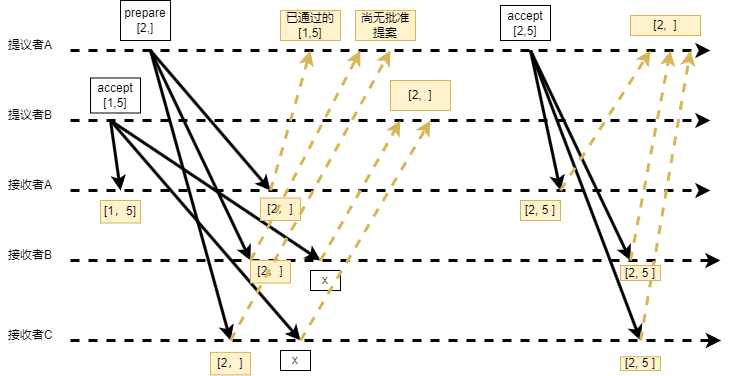
- 接收者A收到提议者B的接收请求，由于本地没有比该提案编号大的提案，顺利接收提案[1,5]。
- 接收者C、B、A依次收到提议者A的prepare请求，对于接收者A来说，编号2比编号1大，且A本地存在已通过的提案[1,5]，故返回[1,5]给提议者A；接收者B、C本地没有通过的提案故返回尚无通过提案。
- 接收者B、C收到提议者B的accept请求，由于本地通过的最大提案编号是2，故返回给提案B已通过的最大提案编号2。
- 提议者A收到了大多数的提案通过响应，发起accept请求,由于这些响应中存在已经接收通过的提案[1,5],故提议者A的提案值不能随意设置，必须设置成5，故accept请求的提案为[2,5]。
- 接收者A、B、C接收到accept请求后由于本地没有比该提案更大编号，故返回提案编号2。
- 提议者A收到编号2，判断与提议的提案编号是否相等，存在大多数相等，则提案达成一致，通知接收者发起提案同步(学习者的学习阶段)。
应用案例：分布式数据库保持数据一致
场景描述：
分布式数据库中假设包含 3 个节点，客户端访问时通过轮询或随机访问的方式请求到其中的某个节点，我们要通过 Paxos 算法保证分布式数据库的 3 个节点中数据的一致性。 实际的分布式数据一致性流程更为复杂，此处为了方便阐述将这个过程进行一些简化。
**基础认知：**分布式数据库中的每个节点都存储三份数据，一是事务日志数据，二是 DB 数据，三是事务日志执行位置。 事务日志表存储着数据库的操作日志记录，包括：写入 Put、修改 Update 和删除 Delete 等相关的操作日志，有些文章资料将事务日志表称为状态机其实是一个意思。 DB 数据表存储具体的业务数据。 事务日志执行位置用于记录当前节点执行到了哪一条操作记录；
整体思路：
通过 Paxos 算法保证各个节点事务日志表数据一致就可以保证节点数据的一致性
流程说明：
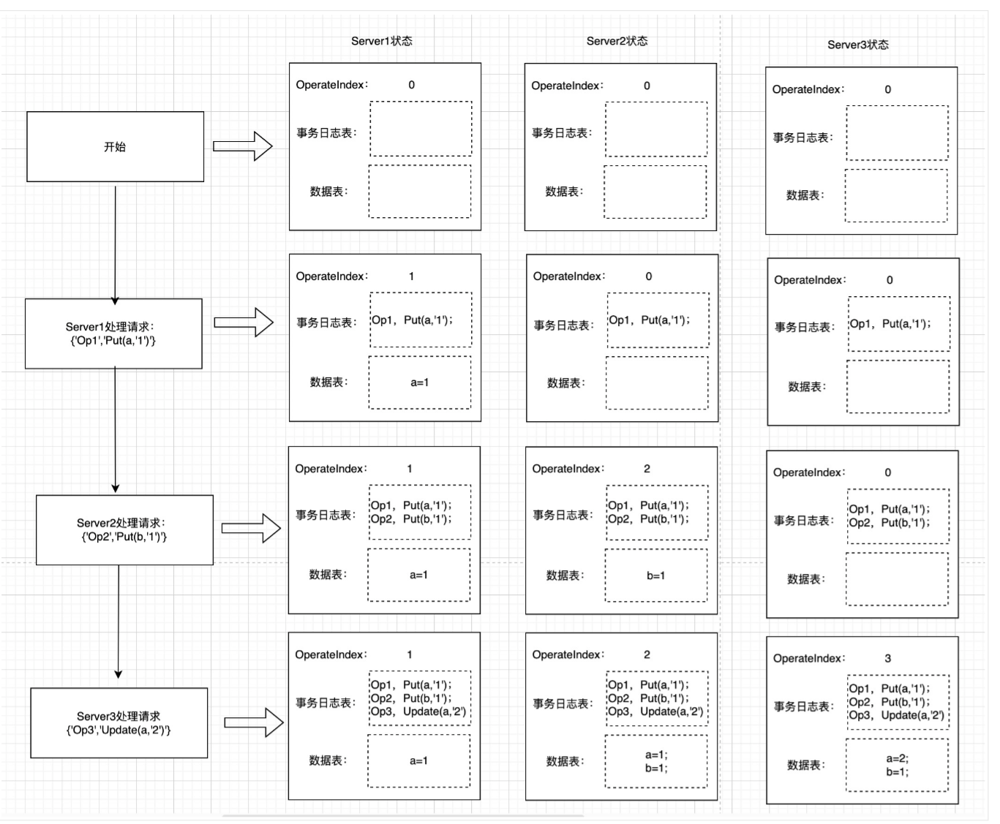
- 1、Server1 接受到 Put (a,'1') 请求，并不是直接写入数据表，而是首先通过 Paxos 算法判断集群节点是否达成写入共识；
- 2、当前三个节点的 OperateIndex 均为 0，事务日志表和数据表均为空，Server1 的 Proposer 首先向三个节点发起 Prepare (OperateIndex + 1)，即 Prepare (1) 请求。
- 3、接收到过半数的 Prepare 请求反馈后，发送 Accept (1,'Put (a,'1')') 请求，并得到 Accepted 请求反馈，则此时三个节点达成共识，当前三个节点的事务日志表均为：{'Op1','Put (a,'1')'}，数据表均为空。
- 4、达成共识后，Server1 执行写入操作并更新当前节点的 OperateIndex，此时 Server1 的 OperateIndex 为 1，其他节点仍为 0，Server1 的数据表为：a = 1，另外两个节点为空，三个节点的事务日志表相同，当前写入流程结束。
假设，此时 Server2 节点接收到 Put (b,'1') 的请求，处理流程如下：
- 1、Server2 接收到 Put (b,'1') 请求，由于当前 Server2 的 OperateIndex 仍为 0，则首先发起 Prepare (1) 的请求，
- 2、由于当前三个节点的 Acceptor 的提案编号均为 1，所以会拒绝 Server2 的 Prepare (1) 请求.
- 3、Server2 未能得到超过半数的 prepare 响应，则会查看当前事务日志表发现已存在 Op1 操作，则从当前节点的事务日志表中取出相应操作并执行，然后将当前节点 OperateIndex 修改为 1；
- 4、Server2 随即再次发起 Prepare (OperateIndex+1)，即 Prepare (2) 的请求。
- 5、此时三个节点达成共识，并更新各自的事务日志表。
- 6、Server2 执行写入操作，此时 Server1 节点状态为 OperateIndex：1，数据表：a=1；Server2 节点状态为 OperateIndex:2, 数据表：a=1 和 b=1；Server3 的节点状态为 OperateIndex：0，数据表为空；三个节点的事务日志表相同，均为： {'Op1','Put (a,'1')'}；{'Op2','Put (b,'1')'}。当前流程执行结束。
假设，此时 Server3 接收到 Get (a) 请求，处理流程如下：
- 1、Server3 接收到 Get (a) 请求，并不是直接查询数据表然后返回，而是要将当前节点的 OperateIndex 和事务日志表中的记录进行比对，如果发现有遗漏操作，则按照事务日志表的顺序执行遗漏操作后再返回。 由于 Get 请求并不涉及对数据的写入和修改，所以理论上不需要再次发起 Paxos 协商。
- 2、此时 Server1 节点的状态为 OperateIndex：1，数据表：a=1；Server2 的节点状态为 OperateIndex:2, 数据表：a=1 和 b=1；Server3 的节点状态为 OperateIndex：2，数据表为 a=1 和 b=1；三个节点的事务日志表相同，均为： {'Op1','Put (a,'1')'}；{'Op2','Put (b,'1')'}。当前流程执行结束。
ZAB协议
ZAB定义
ZAB协议全称： Zookeeper Atomic Broadcast(Zookeeper 原子广播协议)，是为分布式协调服务 Zookeeper 专门设计的一种支持崩溃恢复和原子广播协议。
ZAB概述：Zookeeper 实现了一种主备模式的系统架构来保持集群中各个副本之间数据一致性。这里的主备系统架构模型，就是指只有一台客户端（Leader）负责处理外部的写事务请求，然后Leader客户端将数据同步到其他Follower节点。Zookeeper 客户端会随机的链接到 zookeeper 集群中的一个节点，如果是读请求，就直接从当前节点中读取数据；如果是写请求，那么节点就会向 Leader 提交事务，Leader 接收到事务提交，会广播该事务，只要超过半数节点写入成功，该事务就会被提交。具体如下图所示：
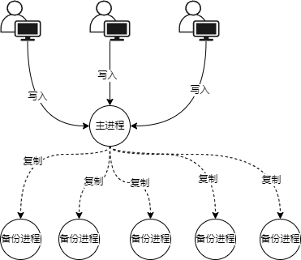
ZAB协议具有两种模式：消息广播和崩溃恢复。整个 Zookeeper 就是在这两个模式之间切换。 简而言之，当 Leader 服务可以正常使用，就进入消息广播模式，当 Leader 不可用时，则进入崩溃恢复模式。
ZAB流程概述
常态流程（广播模式）：
- 集群所有节点初始化时，协商并选举出leader。
- 运行过程中，节点的数据操作集合(一个事务)提交给leader，leader复制给所有follower。
- 当leader收到超过半数follower的确认后，开始本地提交事务，并通知所有的follower提交该事务。
- 通过的事务一致性，最终保证数据的一致性。
注意：事务提交过程类似两阶段，但不是两阶段，因为它过半数就提交了，两阶段要求必须所有follower确认完之后再进行提交
异常流程（崩溃恢复模式）：
- 出现以下情况时，进入崩溃恢复模式，重新选举leader
- 服务框架重启
- 网络中断
- 崩溃退出
- 当集群中已经有过半机器与新 Leader 完成了数据同步之后，ZAB 协议会退出恢复模式。
注意：一个follower只能和一个leader建立连接。
ZAB协议特点：
- Zab 协议需要确保那些已经在 Leader 服务器上提交（Commit）的事务最终被所有的服务器提交。
推导过程：leader在服务器上提交事务的前提是，所有节点对于已通过的事务已经获取到事务副本，如果存在部分节点不提交事务，则最终会导致数据不一致。
- Zab 协议需要确保丢弃那些只在 Leader 上被提出而没有被提交的事务。
推导过程：不丢弃意味着会选择执行事务，假设一个leader已经崩溃，但他存在已经被超半数节点确认但尚未提交的事务，说明可能存在部分节点没有拿到副本事务。如果事务不丢弃，已经拿到副本事务节点提交事务，最终与未拿到副本事务的节点必定存在数据不一致。
zab协议细节
概念与术语
Leader 主: 接收客户端请求，负责将一个客户端事务请求转换成一个提案（Proposal），并将该提案分发给集群中的所有跟随者(Follower)。之后领导者等待所有跟随者的反馈，当过半的跟随者服务器正确反馈后，也称 Quorum，就会再次向所有跟随者分发提交（commit）消息，将 Proposal 提交。
Follower 从: 追随主，将写请求转发给主，可以负责读请求。所以，集群扩容的时候会增加读请求的性能，相反，写性能会有所下降，因为需要同步的机器更多了。
Proposal 提案：<v, z>，v 表示值，z 表示 zxid。
Commit 提交: 事务提交。
Quorum 仲裁: 一般是指过半机制。
Oberver 观察者: 从的一种形式，但是不参与选举。引入只是为了系统的可扩展性。
Epoch 纪元：即每一个 Leader 的任期。
ZXID: 是ZAB协议的事务编号，是一个64位的整数，在整个过程中，
- 低32位是一个单调递增的计数器，每当leader服务器产生一个新的事务提案（Proposal）时，递增1.
- 高32位代表leader的epoch编号，每当选举一个新leader时，就会从新leader取出本地日志中的最大事务提案（Proposal）的zxid，解析出epoch后加1，将低32位置0来开始新的zxid。
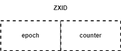
**节点状态：**在ZAB协议中，每一个进程都有可能处于以下三种状态之一。其中还有一种Oberserving状态，是观察者的状态，可以先忽略。
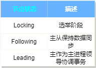
每个节点保持的数据内容
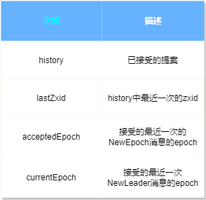
术语
- CEpoch：Follower 发送自己处理过的最后一个事务 Proposal 的 epoch 值。
- NewEpoch：Leader 根据接收 Follower 的 epoch，来生成新一轮 epoch 值。
- Ack-E：Follower 确认接收 Leader 的新 epoch。
- NewLeader：确立领导地位，向其他 Follower 发送 NewLeader 消息。
- Ack-LD：Follower 确认接收 Leader 的 NewLeader 消息。
- Commit-LD：提交新 Leader 的 proposal。
- Propose：Leader 开启一个新的事务。
- Ack：Follower 确认接收 Leader 的 Proposal。
- Commit：Leader 发送给 Follower，要求所有 Follower 提交事务 Proposal。
详细流程
-
每个节点都会先投自己一票。
sid为全局唯一且递增的计数器，其实就是64位唯一事务编号的低32位counterzxid为事务id,是64位唯一事务编号的高32位的epoch如下图，节点3的提案事务编号
ZXID = <sid,zxid> = <1,5>、节点2的提案事务编号ZXID = <sid,zxid> = <2,6>、节点1的提案事务编号ZXID = <sid,zxid> = <3,6> -
节点收到的提案事务后，比较
<1,5>、<2,6>、<3,6>,优先比较zxid,zxid相同然后比较sid。选出提案<3,6>，推选节点1为领导者 -
节点2、节点3作为跟随者，执行CEpoch操作（发送自己处理过的最后一个事务 <3,6>的 zxid值）
-
节点1执行NewEpoch操作，发送最终确认的事务编码值
-
节点2、节点3执行Ack，确认节点1为新的领导者
-
领导者发起数据同步，节点2、节点3确认新领导者(Ack-LD),领导者通知节点提交确认事务（Commit-LD）。至此领导者确认完毕
-
每当外部来了一个写请求，由领导者开始转发至节点2、节点3，节点2、节点3反馈确认后，由节点1再次通知节点2、节点3提交事务。
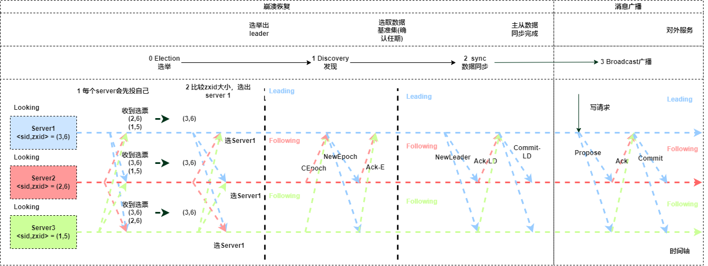
开始选举
需要选举的时机主要包含：
- 集群启动
- 崩溃恢复
每个节点都会选举自身，并加入自身的消息队列向其他节点进行广播。选举消息包含提案vote<sid,zxid>、消息id、选举状态state和投票轮数round。
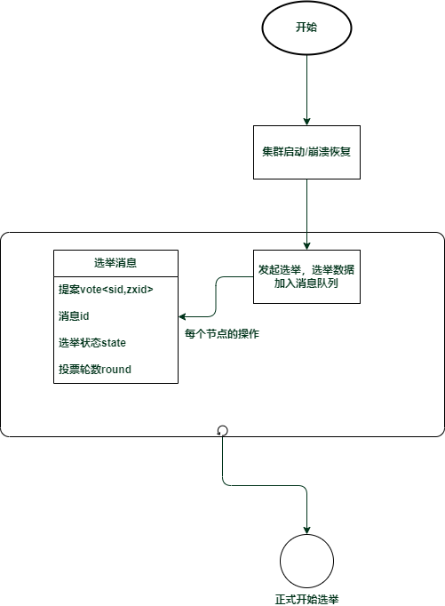
选举流程
- 节点接收广播，只要节点本地最新的选举状态
P.state == election就循环读消息，此时节点锁定，不再接收任务读写事务。 - 当
N.state==election为真时，跳转至2；为假时，跳转至8。 - 进行节点的轮次和收到消息的轮次对比
N.round>P.round,为假时，跳转至3;否则跳转至6。 N.round==P.round如果消息轮次和节点的轮次一致，跳转5；否则则说明消息轮次小于当前节点本地轮次，说明消息轮次无效，回到1，继续循环读取消息。- 开始比较本地最新提案和消息提案
P.vote<N.vote,vote优先比较zxid，zxid相同比较sid。若为真，则修改本地提案为消息提案P.vote = N.vote;若为假，说明当前节点选票大。当前节点无论真假最后均需要通知其他所有节点自身的最新提案结果，跳转7。 - 修改当前轮次
P.round = N.round,开始比较本地最新提案和消息提案P.vote>N.vote,vote优先比较zxid，zxid相同比较sid。若为假，则修改本地提案为消息提案P.vote = N.vote;若为真，说明当前节点选票大。当前节点无论真假最后均需要通知其他所有节点自身的最新提案结果，跳转7。 - 安装sid记录选票，当过半节点的选票结果一致时，跳转至8。
- 节点进入
leading或者following状态，退出选举。
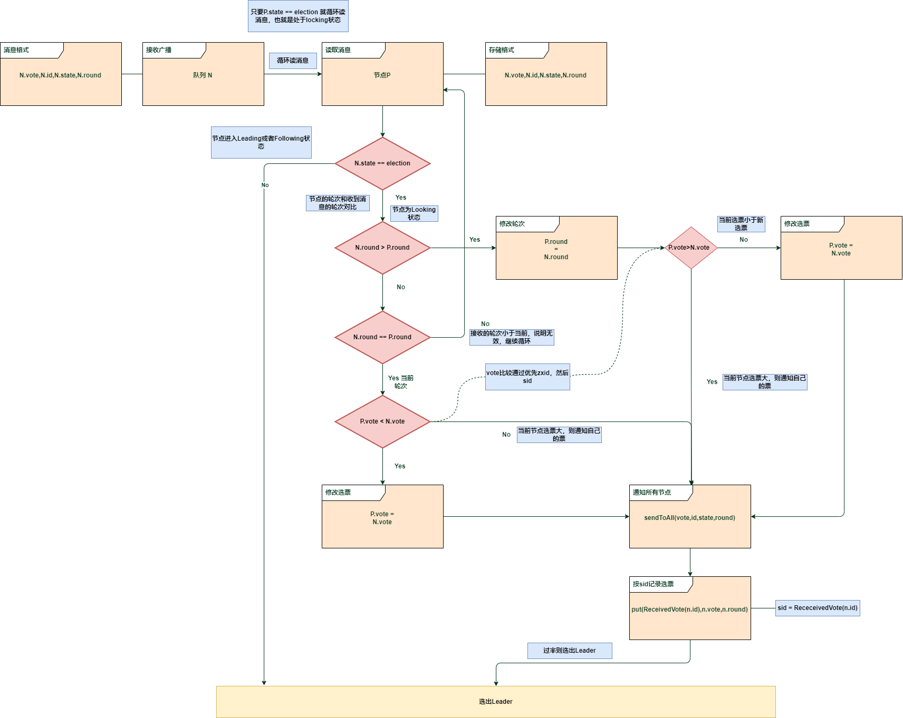
发现流程
更新leader的事务编号
- 跟随者Follower发送本地最新接收的提案CEpoch给领导者Leader，Leader返回新的事务编号
e' - 跟随着判断
e'根本地接收的最新Epoch即F.acceptedEpoch比较，若大于则F.acceptedEpoch = e'，发送确认请求Ack给领导者,若小于，则进入Locking状态，修改本地状态为选举状态等待重新选举F.state=election。 - 当领导者接收超过半数确认响应时，找到最大的事务编号
F.currentEpoch，更新本地的事务编号为最大的事务编号L.history = F.history。找到F节点，用于后续的数据同步。
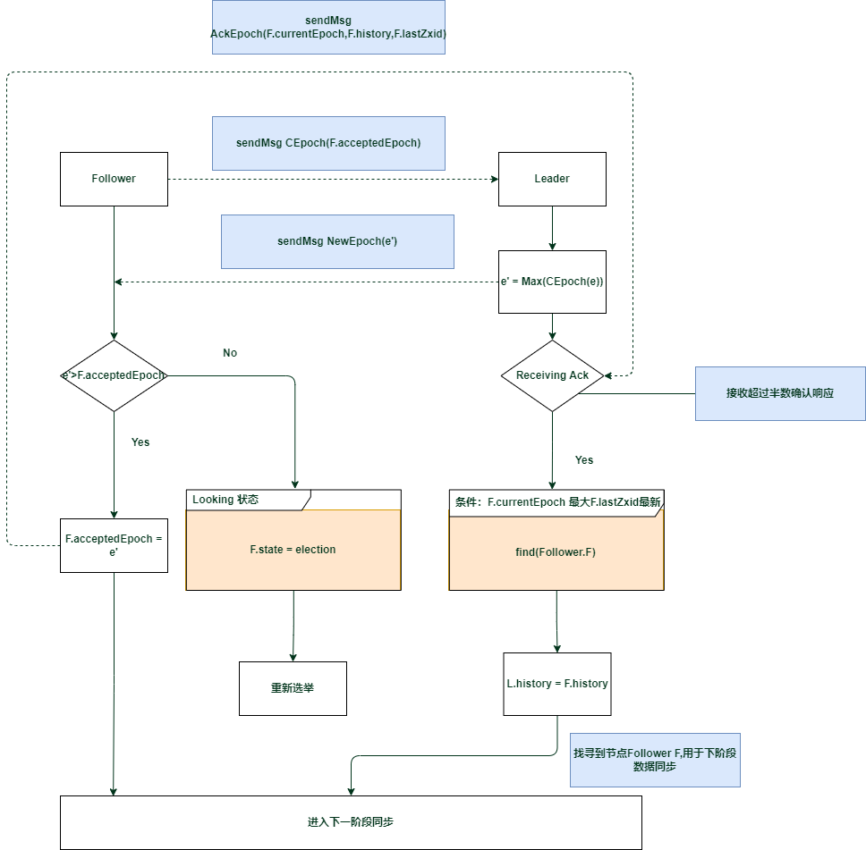
同步流程
- Leader发送新的提案编号和已通过的提案内容给所有跟随者。
- 新的提案编号和跟随者已经接收的最新提案比较
e'==F.acceptedEpoch。为真则，跟随者的当前提案编号更新为e'并接收所有事务，更新事务列表，最后发送确认请求给leader；否则，进入锁定状态重新选举。 - 当Leader接收超过一般的确认时，通知所有跟随者提交事务。
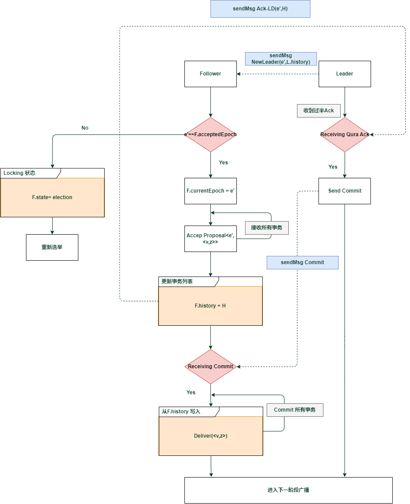
消息广播
- 当Leader接收到一个请求,Leader准备一个新的事务提案发送给所有跟随者。
- 跟随者接收到提案后，更新到自己事务中，并向Leader确认。
- 当确认超过半数跟随者时，Leader开始通知所有节点提交事务。
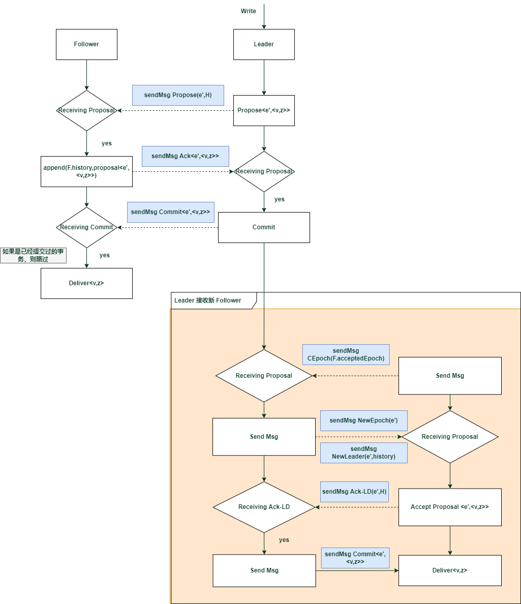
Zab的优势和缺点
ZAB协议优点是在保证数据一致性的同时，具有高可用性和可扩展性。
ZAB协议缺点是需要占用大量的内存和存储空间来记录节点状态，以及在领导者选举和原子广播过程中可能会出现性能瓶颈。
应用方面
金仓数据库集群的数据一致性：金仓数据库采取的是主备模式
实时备份：两阶段+zab协议
异步备份：非两阶段+zab协议
Raft协议（参考文档地址）
诞生原因
Paxos难于理解，在系统设计中具有较高的复杂度和不确定性。
(举例来说，比如一致性的检查时机，理论上paxos需要在每一个学习阶段结束后需要进行一致性检查。一致性检查是一个异步的过程，存在下一个学习阶段覆盖原本学习结果导致一致性无法通过的可能，之后就需要重新进行选举，容易进入到死循环，即原始paxos针对单个值的共识在针对多个值共识的情况下会导致协商的复杂度增大)
什么是复制状态机
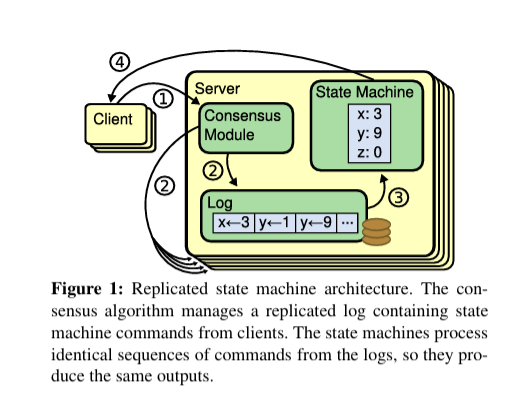
副本状态机是用来解决分布式系统中的容错问题。
副本状态机原理是复制日志，基于每个服务器存储一个包含一系列命令的日志，其状态机按顺序执行这些命令。每个日志包含相同的命令，且顺序相同，因此每个状态机处理相同的命令序列。
对于实际系统的共识算法通常具有以下特性：
- 它们在所有非拜占庭条件下确保安全性（永远不会返回错误结果），包括网络延迟、分区、数据包丢失、复制和重排序。(即只要节点可信，就是安全的)
- 只要大多数服务器处于运行状态并且能够相互以及与客户端通信，它们就是完全功能性的（可用的）。因此，典型的五服务器集群可以容忍任何两台服务器的失败。假设服务器通过停止来失败；它们稍后可能从稳定存储的状态中恢复并重新加入集群。（即半数以下的服务器宕机不会影响功能的可用性，超过半数宕机就无法保证数据一致）
- 它们不依赖于时间来确保日志的一致性：错误的时钟和极端的消息延迟最多只能引起可用性问题（数据最多特定时间段不可用，但不会影响到日志的一致性）
- 在常见情况下，一旦集群的大多数响应了一轮远程过程调用，命令就可以完成；慢速服务器的少数不应影响整个系统的性能。
Raft算法的目标
- 提供完整且实用的系统构建基础：Raft旨在减少开发人员所需的设计工作量，为构建系统提供一个全面且实用的基础。
- 安全性和可用性：Raft必须在所有条件下都是安全的，并且在典型的操作条件下可用。
- 常规操作的效率：Raft需要为常见操作提供高效的解决方案。
Raft共识算法
主要分成三个部分
- 领导者选举。当一个领导者宕机时，必须选出新的领导者。
- 日志复制。领导者必须从客户端接收日志实例，并通过集群复制日志，并强制保证其他节点日志和领导者的日志保持一致。
- 安全性保障。
Raft基础
Raft集群包含多个服务端，假设有5个，则允许2个崩溃。
角色
每个人服务器具备三种角色：领导者（Leader）、跟随者（Follower）或者候选者（candidate）:
- 在正常情况下，只有一个领导者，所有其他服务器层级较低
- 跟随者只回应领导者和候选人的请求。
- 领导者处理所有来自客户端的请求，如果客户联系跟随者，跟随者会将其重定向到领导者。
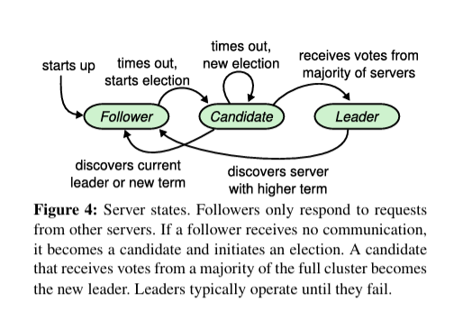
由图可以看出所有节点启动时都是follower状态；在一段时间内如果没有收到来自leader的心跳，从follower切换到candidate，发起选举；如果收到majority的造成票（含自己的一票）则切换到leader状态；如果发现其他节点比自己更新，则主动切换到follower。
总之，系统中最多只有一个leader，如果在一段时间里发现没有leader，则大家通过选举-投票选出leader。leader会不停的给follower发心跳消息，表明自己的存活状态。如果leader故障，那么follower会转换成candidate，重新选出leader。
任期
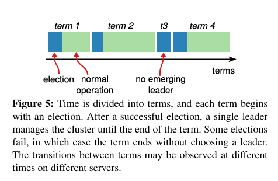
term（任期）以选举（election）开始，然后就是一段或长或短的稳定工作期（normal Operation）。从上图可以看到，任期是递增的，这就充当了逻辑时钟的作用；另外，term 3展示了一种情况，就是说没有选举出leader就结束了，然后会发起新的选举。
选举过程详解
开始选举的原因：跟随者在选举超时的一段时间内没有收到来自领导者的心跳包。诱因可能是此时仍未选举出领导者、领导者宕机或者当前跟随者与领导之间出现网络故障导致无法通信。
投票者的约束（如何决定是否给一个选举请求投票）：
- 任意一个任期内，单个节点最多只能投一票。
- 候选人知道的信息不能比自己的少（索引要更长）。
- 先到先得原则。
选举步骤如下：
- 增加节点本地的
current term,切换到candidate状态 - 投自己一票
- 并行给其他节点发送
RequestVote RPCs - 等待其他节点恢复
等待过程中，根据来自其他节点的消息，可能出现三种结果：
-
收到大多数的选票，赢得选举成为leader。
这里赢得选举之后，新leader会立刻通知所有节点，避免其余节点出发新的选举。
-
被告知别人已当选，那么自行切换到follower。
比如有三个节点A B C。A B同时发起选举，而A的选举消息先到达C，C给A投了一票，当B的消息到达C时，已经不能满足上面提到的第一个约束，即C不会给B投票，而A和B显然都不会给对方投票。A胜出之后，会给B,C发心跳消息，节点B发现节点A的term不低于自己的term，知道有已经有Leader了，于是转换成follower。
-
一段时间内没有收到大多数选票，则保持candidate状态，重新发起选举。如下图：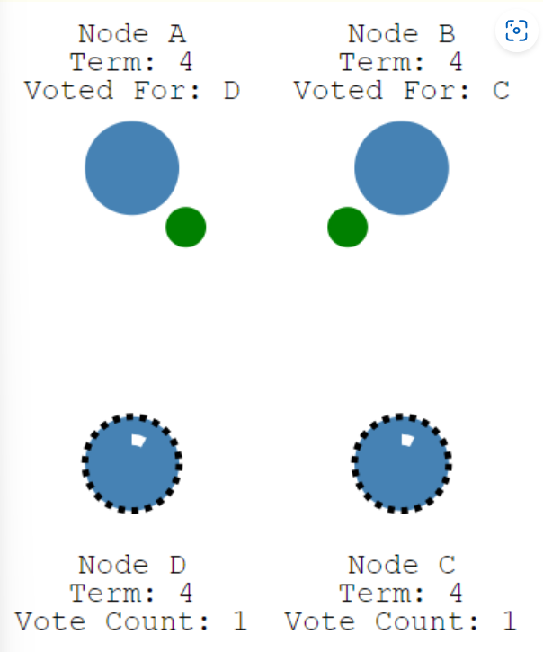
总共有四个节点，Node C、Node D同时成为了candidate，进入了term 4，但Node A投了NodeD一票，NodeB投了Node C一票，这就出现了平票 split vote的情况。这个时候大家都在等啊等，直到超时后重新发起选举。如果出现平票的情况，那么就延长了系统不可用的时间（没有leader是不能处理客户端写请求的），因此raft引入了randomized election timeouts（设定随机的超时时间）来尽量避免平票情况。同时，leader-based 共识算法中，节点的数目都是奇数个，尽量保证majority的出现。
日志结构
可以看到日志的提交过程有点类似两阶段提交(2PC)，不过与2PC的区别在于，leader只需要大多数（majority）节点的回复即可，这样只要超过一半节点处于工作状态则系统就是可用的。
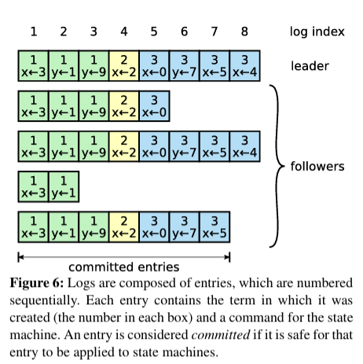
不难看到，logs由顺序编号的log entry组成 ，每个log entry除了包含command，还包含产生该log entry时的leader term。从上图可以看到，五个节点的日志并不完全一致，raft算法为了保证高可用，并不是强一致性，而是最终一致性，leader会不断尝试给follower发log entries，直到所有节点的log entries都相同。
在上面的流程中，leader只需要日志被复制到大多数节点即可向客户端返回，一旦向客户端返回成功消息，那么系统就必须保证log（其实是log所包含的command）在任何异常的情况下都不会发生回滚。这里有两个词：commit（committed），apply(applied)，前者是指日志被复制到了大多数节点后日志的状态；而后者则是节点将日志应用到状态机，真正影响到节点状态。
日志复制（参考状态机）
请求完整流程
当系统(leader)收到一个来自客户端的写请求，到返回给客户端，整个过程从leader的视角来看会经历以下步骤：
- leader 添加日志实例
- leader 并行发布RPC请求
- leader 等待大多数跟随者的响应
- leader 将状态实例应用到状态机
- leader 反馈给客户端
- leader 通知跟随者应用日志
安全性
raft的安全性主要依赖于下图的属性，这保证了日志只要被复制到大多数节点，即使在各种异常情况下，就能保证不会被回滚。
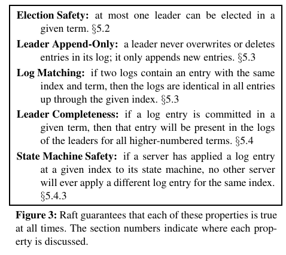
Election Safety
某一任期内一定只有一个leader
log matching
很有意思，log匹配特性， 就是说如果两个节点上的某个log entry的log index相同且term相同，那么在该index之前的所有log entry应该都是相同的。如何做到的？依赖于以下两点
- If two entries in different logs have the same index and term, then they store the same command.
- If two entries in different logs have the same index and term, then the logs are identical in all preceding entries.
首先，leader在某一term的任一位置只会创建一个log entry，且log entry是append-only。其次，consistency check。leader在AppendEntries中包含最新log entry之前的一个log 的term和index，如果follower在对应的term index找不到日志，那么就会告知leader不一致。
在没有异常的情况下，log matching是很容易满足的，但如果出现了node crash，情况就会变得负责。比如下图:
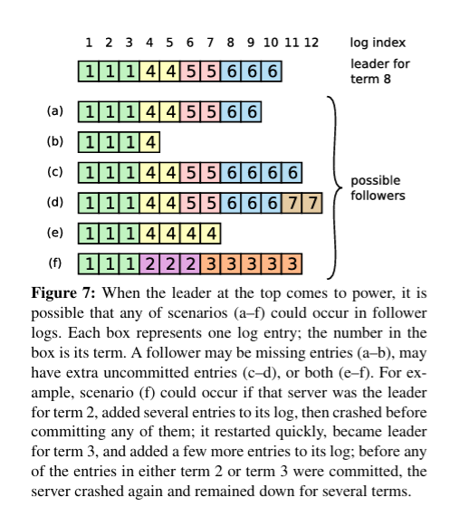
注意：上图的a-f不是6个follower，而是某个follower可能存在的六个状态
leader、follower都可能crash，那么follower维护的日志与leader相比可能出现以下情况
- 比leader日志少，如上图中的ab
- 比leader日志多，如上图中的cd
- 某些位置比leader多，某些日志比leader少，如ef（多少是针对某一任期而言）
当出现了leader与follower不一致的情况，leader强制follower复制自己的log。leader会维护一个nextIndex[]数组，记录了leader可以发送每一个follower的log index，初始化为leader最后一个log index加1， 前面也提到，leader选举成功之后会立即给所有follower发送AppendEntries RPC（不包含任何log entry， 也充当心跳消息）
- leader 初始化
nextIndex[x]为 leader最后一个log index + 1 - AppendEntries里
prevLogTermprevLogIndex来自logs[nextIndex[x] - 1] - 如果follower判断
prevLogIndex位置的log term不等于prevLogTerm，那么返回 False，否则返回True - leader收到follower的回复，如果返回值是False，则
nextIndex[x] -= 1, 跳转到2. 否则跳转至5 - 同步
nextIndex[x]后的所有log entries
leader completeness vs election restriction
leader完整性：如果一个log entry在某个任期被提交（committed），那么这条日志一定会出现在所有更高term的leader的日志里面。这个跟leader election、log replication都有关。
- 一个日志被复制到majority节点才算committed。
- 一个节点得到majority的投票才能成为leader，而节点A给节点B投票的其中一个前提是，B的日志不能比A的日志旧。下面的引文指处了如何判断日志的新旧。
corner case
stale leader
raft保证Election safety，即一个任期内最多只有一个leader，但在网络分割（network partition）的情况下，可能会出现两个leader，但两个leader所处的任期是不同的。
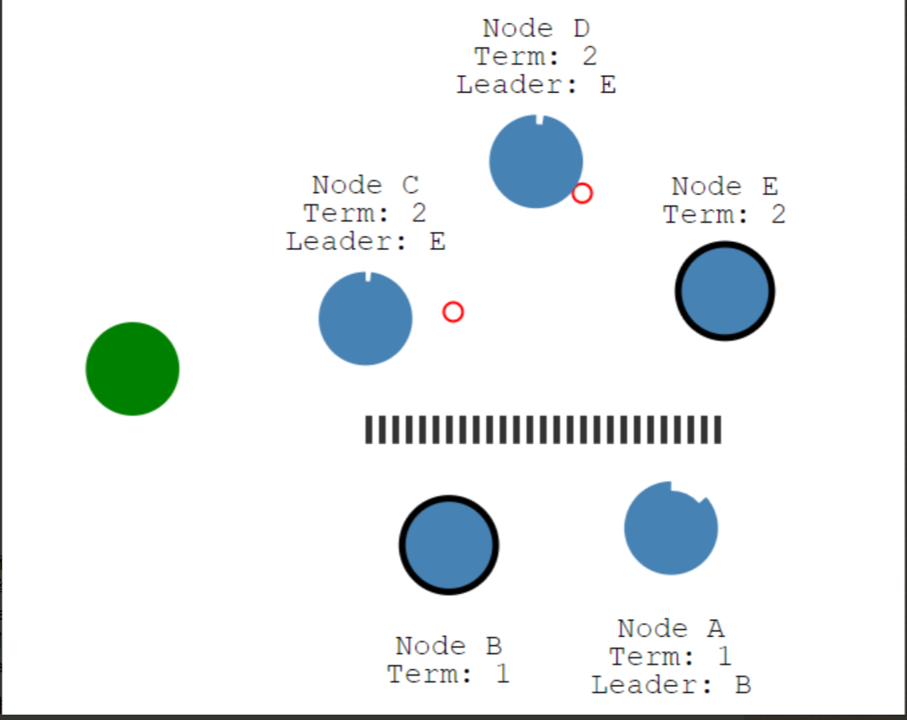
系统有5个节点ABCDE组成，在term1，Node B是leader，但Node A、B和Node C、D、E之间出现了网络分割，因此Node C、D、E无法收到来自leader（Node B）的消息，在election time之后，Node C、D、E会分期选举，由于满足majority条件，Node E成为了term 2的leader。因此，在系统中貌似出现了两个leader：term 1的Node B， term 2的Node E, Node B的term更旧，但由于无法与Majority节点通信，NodeB仍然会认为自己是leader。
在这样的情况下，我们来考虑读写。
首先，如果客户端将请求发送到了NodeB，NodeB无法将log entry 复制到majority节点，因此不会告诉客户端写入成功，这就不会有问题。
对于读请求，stale leader可能返回stale data，比如在read-after-write的一致性要求下，客户端写入到了term2任期的leader Node E，但读请求发送到了Node B。如果要保证不返回stale data，leader需要check自己是否过时了，办法就是与大多数节点通信一次，这个可能会出现效率问题。另一种方式是使用lease，但这就会依赖物理时钟。
从raft的论文中可以看到，leader转换成follower的条件是收到来自更高term的消息，如果网络分割一直持续，那么stale leader就会一直存在。而在raft的一些实现或者raft-like协议中，leader如果收不到majority节点的消息，那么可以自己step down，自行转换到follower状态。
State Machine Safety
如果节点将某一位置的log entry应用到了状态机，那么其他节点在同一位置不能应用不同的日志。简单点来说，所有节点在同一位置（index in log entries）应该应用同样的日志。但是似乎有某些情况会违背这个原则
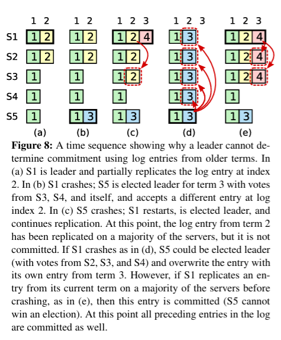
上图是一个较为复杂的情况。在时刻(a), s1是leader，在term2提交的日志只赋值到了s1 s2两个节点就crash了。在时刻（b), s5成为了term 3的leader，日志只赋值到了s5，然后crash。然后在(c)时刻，s1又成为了term 4的leader，开始赋值日志，于是把term2的日志复制到了s3，此刻，可以看出term2对应的日志已经被复制到了majority，因此是committed，可以被状态机应用。不幸的是，接下来（d）时刻，s1又crash了，s5重新当选，然后将term3的日志复制到所有节点，这就出现了一种奇怪的现象：被复制到大多数节点（或者说可能已经应用）的日志被回滚。
究其根本，是因为term4时的leader s1在（C）时刻提交了之前term2任期的日志。
为了杜绝这种情况的发生：某个leader选举成功之后，不会直接提交前任leader时期的日志，而是通过提交当前任期的日志的时候“顺手”把之前的日志也提交了，具体怎么实现了，在log matching部分有详细介绍。那么问题来了，如果leader被选举后没有收到客户端的请求呢，论文中有提到，在任期开始的时候发立即尝试复制、提交一条空的log。
因此，在上图中，不会出现（C）时刻的情况，即term4任期的leader s1不会复制term2的日志到s3。而是如同(e)描述的情况，通过复制-提交 term4的日志顺便提交term2的日志。如果term4的日志提交成功，那么term2的日志也一定提交成功，此时即使s1crash，s5也不会重新当选。
leader crash
follower的crash处理方式相对简单，leader只要不停的给follower发消息即可。当leader crash的时候，事情就会变得复杂参考这里
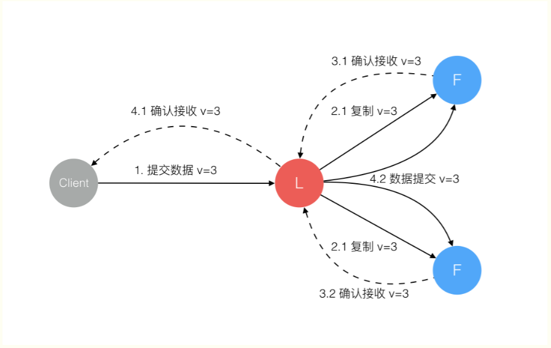
参考文档
- 【网络技术】P2P技术原理浅析 (keenjin.github.io)
- 区块链 Gossip Protocol是什么_gossiping是什么 区块链-CSDN博客
- 【超详细】分布式一致性协议 - Paxos-腾讯云开发者社区-腾讯云 (tencent.com)
- 一篇文章让你弄懂分布式一致性协议 Paxos - 开源动态 - 渠成开源社区 (qucheng.cc)
- Zab协议详解-分布式系统（六）-腾讯云开发者社区-腾讯云 (tencent.com)
- 用流程图来理解 - ZooKeeper 中的 ZAB 协议 - 掘金 (juejin.cn)
- raft.pdf
- 一文搞懂Raft算法 - xybaby - 博客园 (cnblogs.com)
- Raft 为什么是更易理解的分布式一致性算法 - mindwind - 博客园 (cnblogs.com)
- 内网穿透工具的原理与开发实战-云社区-华为云 (huaweicloud.com)